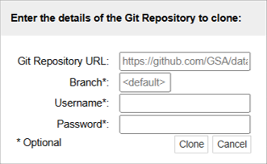
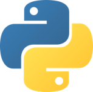
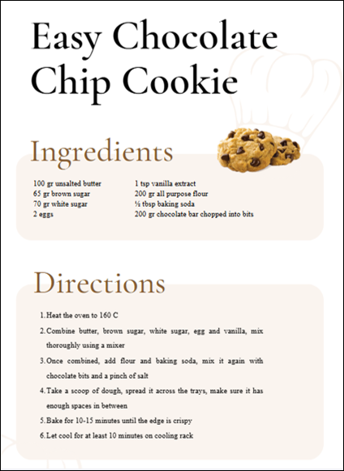
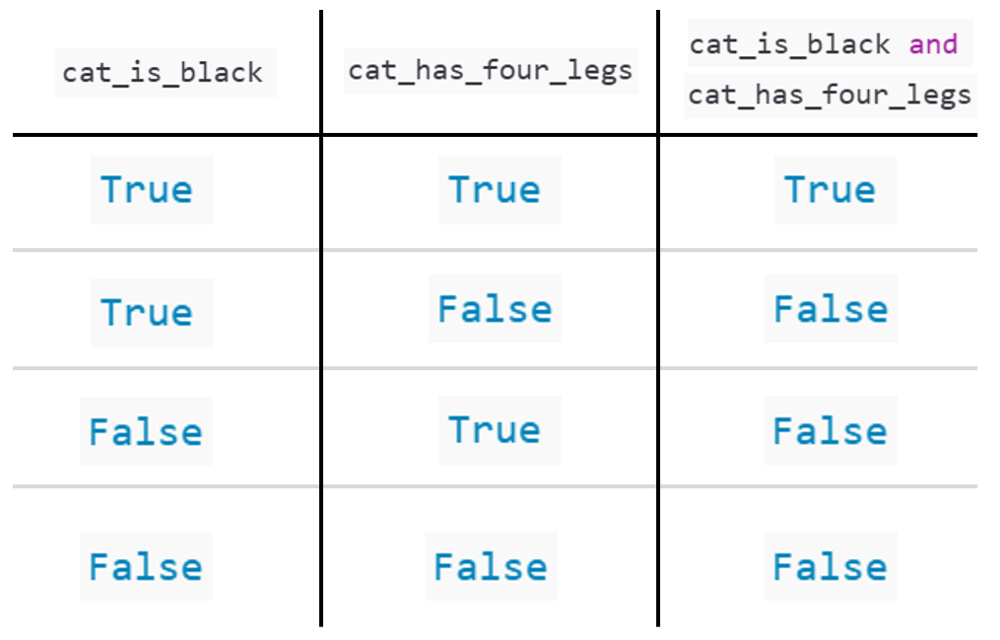

def greet(name):
"""Return a friendly greeting."""
return f"Hello, {name}!"
greet("Bob")'Hello, Bob!'The course material is available online via:
Introduction to Coding and Data Analysis for Scientists 2025Unit Information and ResourcesJupyter Classic (Legacy) is selected.+GitRepogit@github.com:TomMaullin/SCIF10002-2025.git

In the same way humans communicate using different languages, there are many languages we can use to communicate with a computer
Python is particularly useful for:
In fact, learning to code is a lot like learning a language
When learning French, you might:
You can’t learn a language by listening to other people describe it…
Hands-on experience and regular practice are crucial!

# Start with two ingredients (inputs)
x = 7
y = 4
# Step 1: Add them together
step1 = x + y
# Step 2: Multiply the result by 2
step2 = step1 * 2
# Step 3: Subtract y from that
z = step2 - y
# Final output
print("The final result is:", z)The final result is: 18Here we are producing some output that might be difficult to compute or evaluate by hand.
x and y are variables= symbol is the assignment operator.
x=7 means “Save the integer 7 under the variable name x”When writing the recipe, some foods were of the “same type”
In the same way, in coding we have different types of data
Today, we shall look at some of these
Understanding data types is important, as we want to use different data types for different tasks
float and int functions.y to an integer?Warning: A computer cannot actually describe arbitrarily small and large numbers – it approximates instead
After todays practical you will be able to perform some of these operations!
A Boolean is variable that can be either True or False
Booleans represent logical statements.
For instance, we might think of:
cat_is_black as representing the sentence “The cat is black”cat_has_four_legs as representing the sentence “The cat has four legs”We can use logical operators to combine Boolean statements
cat_is_black and cat_has_four_legs represents the sentence “The cat is black and has four legs”
---
title: Introduction to Coding and Data Analysis for Scientists
jupyter: python3
---
## Week 1: Introduction and Data Types
## Today's Lecture
- Lecture 1: Introduction and Data Types
- Course Structure
- Setting up Noteable
- Introduction to Coding
- Data Types
- Practical
## Course Structure
- This course will run for 20 weeks
- We will cover:
- Data types, conditionals and loops
- Building functions
- Numpy arrays and linear algebra in python
- Pandas dataframes
- Plotting and visualisation
- Classes:
- 1 lecture per week (Thursday)
- 1 small-group tutorial per two weeks (date should be on calendar)
# About us
- Dr Francesco Turci (Course director, School of Physics)
- f.turci@bristol.ac.uk
- Dr Thomas Maullin-Sapey (lecturer, School of Mathematics)
- thomas.maullin-sapey@bristol.ac.uk
## Lectures
- The weekly lecture will consist of
- ≈ 30-40 minutes presentation time covering:
- Key concepts
- Administrative points (e.g. homework submission etc)
- Code Demonstrations#
- ≈ 1-1.5 hours practical
- Designed to provide hands on experience
- Opportunity to ask for help from
- Lecturer
- PhD helpers
- Each other!
## Assignments
- Formative:
- Weekly (optional) assignments available on quarto
- Summative:
- This module is 100% coursework
- 4 pieces of coursework
- Assignment 1 (15%)
- Assignment 2 (30%)
- Assignment 3 (15%)
- Assignment 4 (40%)
- Assignments 1-3 will be exercises
- Assignment 4 will be different
- Project report analysing a dataset
## Online Material
- The course material is available online via:
- Quarto – online searchable version
- Noteable – interactive interface we shall work in during class
<img src="./images/noteable.png" alt="Welcome page for the unit on Blackboard" style="display:block;margin-left:auto;margin-right:auto;width:80%"/>
## Accessing Noteable
- Open Blackboard
- Go to `Introduction to Coding and Data Analysis for Scientists 2025`
- Click `Unit Information and Resources`
- Open Noteable
- Make sure `Jupyter Classic (Legacy)` is selected.
- Click Start
- Click `+GitRepo`
- Paste into Git Repository URL: `git@github.com:TomMaullin/SCIF10002-2025.git`
- Press clone
<img src="./images/noteable2.png" alt="Welcome page for the unit on Blackboard" style="display:block;margin-left:auto;margin-right:auto;width:20%"/>
## Introduction to Coding
- In this module, we shall be learning to code in Python
- Python is a programming language
<img src="./images/python.png" alt="Welcome page for the unit on Blackboard" style="display:block;margin-left:auto;margin-right:auto;width:20%"/>
- In the same way humans communicate using different languages, there are many languages we can use to communicate with a computer
- Python is particularly useful for:
- Analysing data
- Making plots and visualisations
- Running simulations
- Machine learning and AI
```{python}
#| slideshow: {slide_type: fragment}
def greet(name):
"""Return a friendly greeting."""
return f"Hello, {name}!"
greet("Bob")
```
## Learning to Code
- In fact, learning to code is a lot like learning a language
- When learning French, you might:
- Learn many phrases
- Practice writing sentences
- Speak to people who know the language
- You can't learn a language by listening to other people describe it…
- Hands-on experience and regular practice are **crucial!**
## Getting Started
- So… what actually is coding?
- You can think of writing code as like writing a recipe…
- You might start by specifying some ingredients…
- Then list some instructions…
- To get a desired output
- Coding is pretty similar
<img src="./images/recipe.png" alt="Welcome page for the unit on Blackboard" style="display:block;margin-left:auto;margin-right:auto;width:20%"/>
## Getting Started
- You might start by specifying some **inputs**…
- Then list some **instructions**…
- To get a desired **output**
```{python}
#| slideshow: {slide_type: fragment}
# Start with two ingredients (inputs)
x = 7
y = 4
# Step 1: Add them together
step1 = x + y
# Step 2: Multiply the result by 2
step2 = step1 * 2
# Step 3: Subtract y from that
z = step2 - y
# Final output
print("The final result is:", z)
```
Here we are producing some output that might be difficult to compute or evaluate by hand.
## Assigning Variables
```{python}
#| slideshow: {slide_type: fragment}
x = 7
y = 4
```
- In this code, `x` and `y` are variables
- These are named pieces of data which we can use for future computations
- The `=` symbol is the assignment operator.
- Unlike in maths, this is an instruction
- E.g. `x=7` means "Save the integer 7 under the variable name x"
## Data Types
```{python}
#| slideshow: {slide_type: fragment}
x = 7 # an integer
y = "hello" # a string of text
z = True # a boolean (true/false)
```
- When writing the recipe, some foods were of the “same type”
- E.g. we had 2 eggs
- In the same way, in coding we have different types of data
- Today, we shall look at some of these
- Understanding data types is important, as we want to use different data types for different tasks
## Numeric Data Types
```{python}
#| slideshow: {slide_type: fragment}
# Start with an integer and a float
x = 7 # integer
y = 3.5 # float (decimal number)
# Convert integer to float
x_as_float = float(x)
# Convert float to integer
y_as_int = int(y)
```
- The most ubiquitous data types are numeric
- Integers: Whole numbers/Integers
- ℤ = {…, -3, -2, -1, 0, 1, 2, 3,… }
- Floats: Decimal numbers
- ℝ = Real numbers
- We can convert between float's and integers using the `float` and `int` functions.
- What do you think might happen if we convert `y` to an integer?
**Warning:** A computer cannot actually describe arbitrarily small and large numbers – it approximates instead
## Strings
- A string is a sequence of characters. Strings can contain:
- Letters
- Numbers (treated as characters)
- Punctuation
- Spaces
- Combinations of the above
- Nothing at all
```{python}
# Letters
letters = "Hello"
# Numbers (treated as characters)
numbers = "12345"
# Punctuation
punctuation = "!?.,;;"
# Spaces
spaces = " " # three spaces
# Combinations of the above
combo = "Hi123?! "
# Nothing at all (an empty string)
empty = ""
```
- In practice, there are many things we may want to do with text in Python
- Split it into sentences
- Search through it
- Replace words
After todays practical you will be able to perform some of these operations!
## Booleans
- A Boolean is variable that can be either `True` or `False`
- Booleans represent logical statements.
- For instance, we might think of:
- `cat_is_black` as representing the sentence "The cat is black"
- `cat_has_four_legs` as representing the sentence "The cat has four legs"
- We can use logical operators to combine Boolean statements
- `cat_is_black and cat_has_four_legs` represents the sentence "The cat is black and has four legs"
```{python}
#| slideshow: {slide_type: fragment}
cat_is_black = True
cat_has_four_legs = False
print(cat_is_black and cat_has_four_legs)
```
## Booleans
<img src="./images/truth_table.png" alt="Welcome page for the unit on Blackboard" style="display:block;margin-left:auto;margin-right:auto;width:60%"/>
## Collections
- We've now seen some simple examples of datatypes:
- Numeric, strings, and booleans.
- Data types don’t always have to be this simple!
- Sometimes we need data types that can hold more complex information.
- We'll see more examples throughout the course but for now we'll provide just one
- A collection is any in-built data type that can group multiple objects together.
- The most common collection is a list: an ordered group of items.
- Lists let you store, organize, and work with many values at once.
```{python}
#| slideshow: {slide_type: fragment}
# A list of numbers
scores = [10, 15, 20]
# A List of strings
shopping = ["milk", "bread", "eggs", "cheese"]
# A mixed list (different data types together)
mixed = [42, "hello"]
```
## Practical
- We have students from a range of courses and backgrounds in this class
- Chemistry
- Physics
- Data Science
- Some people in the room will have less experience than others
- For the first few weeks, we shall try to account for the differences in ability where possible
## Practical
- We now move over to Python
- Please open [week_01_home.ipynb](./week_01_home.qmd)
- For the rest of today, you must work through a Python notebook
- You have a choice of one of three options
- [Option 1: Beginner - Basic Data Types](week_01_intro_to_data_types_beginner.qmd)
- [Option 2: Intermediate - Collections](week_01_intro_to_data_types_intermediate.qmd)
- [Option 3: Advanced - Copying and References](week_01_intro_to_data_types_advanced.qmd)